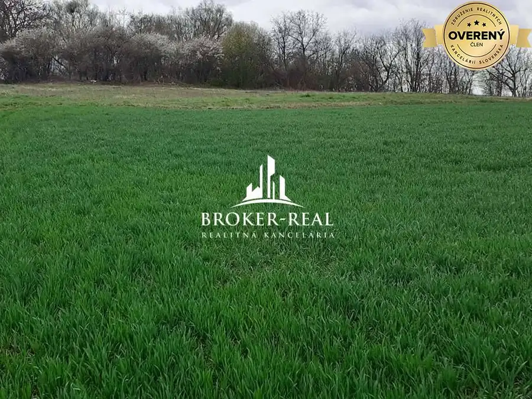

Stavebný pozemok Tornyosnémeti, Maďarsko
Gönc, Tornyosnémeti

- Plocha1000 m²
- Stavpôvodný
O nehnuteľnosti
Na predaj pozemok vhodný na stavbu rodinného domu o výmere 1000 m2 v obci Tornyosnémeti. Zastavanosť pozemku je 30 %. Inžinierske siete: zemný plyn, obecný vodovod sú pred pozemkom, elektrina vedená na stĺpoch vzduchom s možnosťou prípojky k domu. Prístup na pozemok je z asfaltovej komunikácie. Pozemok je v nezáplavovej a nezosuvovej zóne, s pevným a suchým podložím.
Ak sa Vám nezobrazuje úplný opis, vyhľadajte si inzerát na našej webovej stránke ... broker-real.sk, ID 966
FOTO JE ILUSTRAČNÉ
Výhody: Cena nami ponúkanej nehnuteľnosti je stanovená vlastníkom a zahŕňa štandardné poplatky: kúpna zmluva a overenie, zavkladovanie nehnuteľnosti prostredníctvom zmluvného právnika na Slovensku a v Maďarsku, odovzdanie a prepis energií u dodávateľov. Ak neovládate reč slovom a písmom, zabezpečíme Vám oficiálne tlmočenie pred úradmi.
Ceny nehnuteľností sa môžu meniť v súvislosti so zmenou kurzu v danom čase.
Ďalšie informácie a termín obhliadky, spôsob a podmienky vybavenia najvýhodnejšieho HYPO úveru si dohodnite na zákazníckej linke: +
Váš spoľahlivý realitný maklér a poradca ®.
Parametre
- Rozloha pozemku
- 1000 m²
- Celková rozloha
- 1000 m²
- Poschodie
- neuvedené
- Stav
- pôvodný
- Status
- aktívne
- Dátum zverejnenia
- 2026-09-04